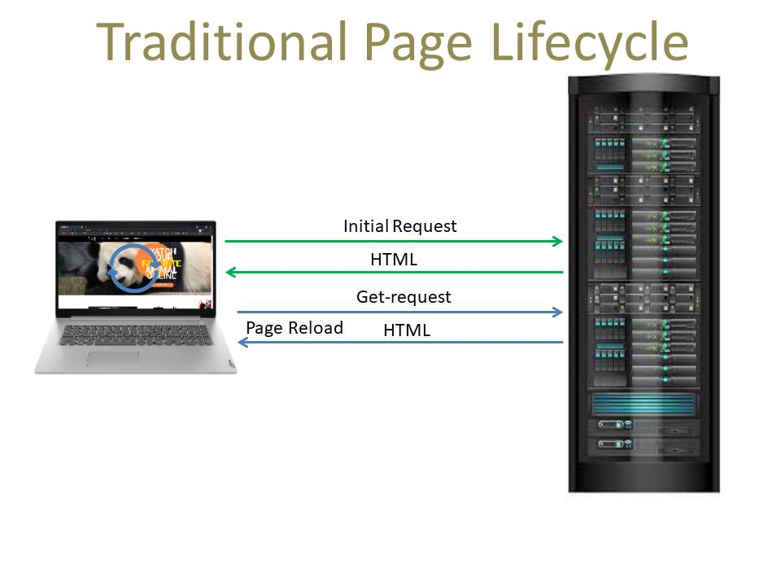

In the early-to-mid 1990s, most Web sites were based on complete
HTML pages. Each user action required that a complete new page be
loaded from the server.

In 1996, the iframe tag was introduced by Internet
Explorer, like the object element, wich can load or fetch content
asynchronously.
In 1998, the Microsoft Outlook Web Access team
developed the concept behind the XMLHttpRequest scripting object.
This functionality was later implemented by Mozilla, Safari, Opera
and other browsers as the XMLHttpRequest JavaScript object.
The term AJAX was publicly used
on 18 February 2005 in article by Jesse James
Garrett.
On 5 April 2006, the World Wide Web Consortium (W3C)
released the first draft specification for the XMLHttpRequest
object in an attempt to create an official Web standard.
AJAX
(Asynchronous JavaScript And XML)
It is a set of web development techniques using many web
technologies on the client-side to create asynchronous web
applications. Which means it can communicate with the server,
exchange data, and update the page without having to refresh the
page. It can send and receive information in various formats,
including JSON, XML, HTML, and text files.
Ajax is a group of technologies.
-
HTML (or XHTML) and CSS are used in combination to mark up
and style information
-
The Document Object Model (DOM) for dynamic display of and interaction with data
-
JSON or XML for the interchange of data
-
XMLHttpRequest object or fetch function for asynchronous communication
-
JavaScript to bring these technologies together
AJAX is often used to create single-page applications (SPA)
SPA is a web application or
website that interacts with the user by dynamically rewriting the
current web page with new data from the web server, instead of the
default method of a web browser loading entire new pages.